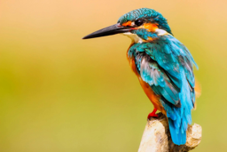

from duckduckgo_search import DDGS
from fastcore.all import *
ddgs = DDGS()
def search_images(term, max_images=30):
print(f"Searching for '{term}'")
return L(ddgs.images(keywords=term, max_results=max_images)).itemgot('image')Introduction
Welcome to my deep dive in to the world of deep learning! In this blog post, I’ll be sharing my journey through the first lession of fast.ai course an acclaimed program that makes learning AI accessible and enjoyable.
Fast.ai was created with the goal of making deep learning understandable for everyone, no matter their background, and Lesson 1 accomplishes that by having us build a simple yet fascinating model: a bird classifier. this exciting task not just introduces me to the basics of deep learning but also alow me to experience firsthand the power and simplicity of modern AI tools.
Join me as I walk you though key conccept covered in the Lesson 1, from understanding how images are processed by computers to trainning and validating our model. I will also share some personal insights and reflections on the learning process, aiming to make this technicial journey both infomative and relatable.
Whether you are a bigginer in AI or someone looking for refresh your knowledge, I hope this post inspires and guides you in your own deep learning
The XKCD Joke and Debunking Deep Learning Myths

Jeremy Howard kicked off the lesson with relatable XKCD Joke about how in 2015, detecting a bird in a photo was seen as a challenging task, almost a joke. Fast forward to today, and we can build such as system in mere minutes, showcasing how far deep learning has come.
Many people believe that diving into deep learning requires extensive mathematical knowledge, huge datasets, and expensive hardware. However, these myths are far from the truth.
| Myth(Don’t need) | Truth |
|---|---|
| Lots of math | Just high school math is sufficient |
| Lots of data | We’ve seen record-breaking results with fewer than 50 items of data |
| Lots of expensive computer | You can perform state-of-the-art work with hardwere available for free of minimal cost |
Top-Down Learning Approach
One of the most refreshing aspects of fastai course is its top-down teaching approach. Traditional education often starts with the basics and slowly builds up to more complex topics. However, Jeremy Howard and Rachel Thomas believe that learning is more effective when you see the big picture first.
In the fastai course, we start by building practicall applications from lession one, allowing us to see immediate results and understanding the relevance of what we are doing. This approach mirrors how we learn many real-word skills, such as sport or cooking, where we start by trying out the activity and learn the details as needed.
By diving straight into creating a deep learning model, we get hands-on experience early on, which helps solidify our understanding and maintain our interest. As we process though the course, we gradually delve deeper into the underlying principles and theories, bulding a robust foundation along the way
Understanding Deep learning
Deep learning is a technique for extracting and transforming data, with application ranging from speech recognition to image classification. It uses multiple layer of neural networks, where each layer refines the data received from the previous one. These layers are trained using the algorithms that minimize the errors and improve accuracy, enabling the network to learn specific tasks.
Deep learning’s power, flexibility, and simplicity make it applicable across various field, including social science, medicine, finance, and more. For instance, despite lacking of medical background, Jeremy Howard founded Enlitic, a company leveraging deep learning to diagnose illnesses. Within months, their algorithm was more effective at identifying malignant tumors than radiologists.
Here are some areas where deep learing excels:
- Natural Language Processing (NLP): Answering question, speech recognition, document summarization, and more.
- Computer Vision: Interpreting satellite images, face recognition, and automous vehicle navigation.
- Medicine: Analyzing radiology images, measuring features and medical scans, and diagnosing diseases.
- Biology: Protein folding, genomics tasks, and cell classification.
- Image Generation: Colorizing images, enhancing resolution, and converting images to artistic style.
- Recommendation System: Web search optimization, product recommendations, and personalized content layout.
- Gaming: Mastering games like Chess, Go, and various video games.
- Robotics: Handling challenging objects and complex manipulation tasks.
- Other: Financial forecasting, text-to-speech conversion, and much more.
The versatility of deep learning lies in its foundation: neuron networks.
A Brief History of Deep Learning

Deep learning draws inspiration from human brain’s neural network. The concept of neural network isn’t new; it dates back to 1957 with the creation of the first neural network. The fundamental ideas remain the same today, but advances in hardware and data availability have significantly propelled the field forward.
The Sofware: Pytorch, Fastai, and Jupyter
At fastai, after extensive testing of various machine learning packages and languages, they decided to adopt Pytorch in 2017 for their course, software development, and research. Pytorch has become the fastest-growing deep learning library and is widely used in academic research and industry. Its flexibiligy and expressiveness make it an excellent foundation for deep learning.
The fastai library builds on top of Pytorch, provide high-level functionality for deep learning. This layered architecture allows for a seemless learning experience, make it easier to understand both high-level concepts and low-level operations.
However, the specific software you use a less important than understanding the core principles and techniques of deep learning. Learning to trasition between the libraries is relatively quick, but mastering deep learning foundation is crucial.
Jupyter notebook, a powerful and reflexible tool for data science, will be our primary platform for experimentation. Its interation with fastai and Pytorch makes it ideal for developing and testing deep learning model.
Ready to see it in action? Let’s train our first model!
Exploring the “Is it a Bird?” Classifier
One of the most exciting part of Lesson 1 was building our own image classifier to determine whether the a given image contains a bird. For this project, we used the fastai libray along with pre-trained model to quickly and efficiently create our classifier. Let’s dive into the code walkthrouh.
The basic steps we’ll need to do:
- Use DuckDuckGo for search images of “bird photos”
- Use DuckDuckGo to search for images of “forest photos”
- Fine-tune a pretrained neural network to recognise these two groups
- Try running this model on a picture of bird and see if it works.
Searching for images: DuckDuckGo Search
Instead of using a big search that reqires an API key, we opted to DuckDuckGo, which doesn’t reqire an API key for image searches. This make the setup simpler and faster.
But make sure you run this command in your terminal before run the code to update duckduckgo
pip install -Uqq fastai duckduckgo_searchurls = search_images('bird photos', max_images=1)
urls[0]Searching for 'bird photos''https://images.pexels.com/photos/326900/pexels-photo-326900.jpeg?cs=srgb&dl=wood-flight-bird-326900.jpg&fm=jpg'Jeremy Howard mentioned that using import * in Jupyter notebooks is not the big deal because Jupyter only import what we use. This approach simplifies the code and keeps it clean.
Here’s the quick explaination of the functions and libraries used in this snippet:
DDGSfromduckduckgo_search:duckduckgo_search: This library allows us to search for iamges using DuckDuckGo without the need for an API key.DDGS: This class handles the image search functionality within DuckDuckGo.
fastcore:fastcore: A foundational library that provide utilities and functions making Python code more concise and expressive.
L:L: A specialized list class provided byfastcorethat extends Python’s built-in list with additional functionality, make it more powerfull and convinient.
In our example, search_images is a function that performs an image search using DuckDuckGo. It’s print out the search term being used and return a list of images URLs retrieved from the search results.
for more details on the tools, you can refer to the fastcore documentation and the duckduckgo_search documentation.
from fastdownload import download_url
dest = 'bird.jpg'
download_url(urls[0], dest, show_progress=False)
from fastai.vision.all import *
im = Image.open(dest)
im.to_thumb(256,256)
fastdownloadanddownload_url:fastdownload: This is a library that helps with downloading files and dataset easily.download_url: A function fromfastdownloadthat download a file from a URL. In our example, it downloads an image and saves it as abird.jpg
fastai.vision.all:- This module from fastai library provides all the necessary tools for vision task, including data loaders, transformation functions, and model architectures.
to_thumb:- A method from the
PIL.Imageclass, which is quite handy. It resizes an image to a thumbnail while mainting the espect rato. In this case it resizes the download image to a 256x256 thumbnail.
- A method from the
These libraries and function streamline the process of getting and preparing the images for our model. For more detailed documentation, you can refer to the fastdownload, fastai vision, and Pillow documentation.
download_url(search_images('forest photos', max_images=1)[0], 'forest.jpg', show_progress=False)
Image.open('forest.jpg').to_thumb(256,256)Searching for 'forest photos'searches = 'forest','bird'
path = Path('bird_or_not')
from time import sleep
for o in searches:
dest = (path/o)
dest.mkdir(exist_ok=True, parents=True)
download_images(dest, urls=search_images(f'{o} photo'))
sleep(10) # Pause between searches to avoid over-loading server
download_images(dest, urls=search_images(f'{o} sun photo'))
sleep(10)
download_images(dest, urls=search_images(f'{o} shade photo'))
sleep(10)
resize_images(path/o, max_size=400, dest=path/o)Searching for 'forest photo'
Searching for 'forest sun photo'
Searching for 'forest shade photo'
Searching for 'bird photo'
Searching for 'bird sun photo'
Searching for 'bird shade photo'failed = verify_images(get_image_files(path))
failed.map(Path.unlink)
len(failed)0dls = DataBlock(
blocks=(ImageBlock, CategoryBlock),
get_items=get_image_files,
splitter=RandomSplitter(valid_pct=0.2, seed=42),
get_y=parent_label,
item_tfms=[Resize(192, method='squish')]
).dataloaders(path, bs=32)
dls.show_batch(max_n=6)
learn = vision_learner(dls, resnet18, metrics=error_rate)
learn.fine_tune(3)Downloading: "https://download.pytorch.org/models/resnet18-f37072fd.pth" to /root/.cache/torch/hub/checkpoints/resnet18-f37072fd.pth
100%|██████████| 44.7M/44.7M [00:00<00:00, 112MB/s] | epoch | train_loss | valid_loss | error_rate | time |
|---|---|---|---|---|
| 0 | 0.961129 | 0.898895 | 0.411765 | 00:11 |
| epoch | train_loss | valid_loss | error_rate | time |
|---|---|---|---|---|
| 0 | 0.175680 | 0.112270 | 0.029412 | 00:15 |
| 1 | 0.097206 | 0.023054 | 0.000000 | 00:14 |
| 2 | 0.067422 | 0.008220 | 0.000000 | 00:14 |
is_bird,_,probs = learn.predict(PILImage.create('bird.jpg'))
print(f"This is a: {is_bird}.")
print(f"Probability it's a bird: {probs[0]:.4f}")This is a: bird.
Probability it's a bird: 1.0000